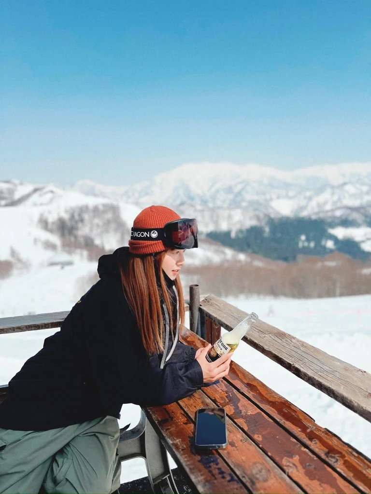

WEB DESIGN PORTFOLIO
伝えたいことを、見たくなるかたちに。
Work


季の美
Content Website · 2026/09
About
“From Hong Kong to Tokyo. Exploring ideas through web and design.”

香港出身
好きなこと
Li Pui Ka リプイカ
Web Designer / Web Creator / Digital Designer
香港のクリニックで長年働いた後、もう一度学び、新しい分野で仕事をしたいと考えました。当時は香港で日本語を学んでおり、日本の生活環境が好きだったこともあり、日本語学校への留学を決めました。
来日後、これからの仕事について調べる中で、Webデザインに興味を持ちました。画面のデザインや、見る人にわかりやすく伝える方法を学びたいと思い、HAL東京に入学しました。
実際に制作してみると、写真を選び、情報を整理して、一つのページにまとめていく時間が楽しく、Webデザインを仕事にしたいと感じました。見た目に惹かれて、もっと見たくなる。そんな魅力があり、使いやすさも大切にしたWebサイトをつくりたいです。
Education
HAL東京
WEB学科・WEBデザイン専攻
2027年3月 卒業予定
Focus
内容と情報の順序を整理し、サイトのテーマや目的が伝わる構成
写真・文字・レイアウトで、続きを見たくなる画面づくり
読みやすく、操作に迷わず、必要な情報を見つけられる設計
Tools
Figma / HTML / CSS / JavaScript / PHP /
Photoshop / Illustrator /
VS Code / Git / Codex
Languages
広東語：母語
中国語（普通話）：会話可能
英語：TOEIC 795点
日本語：JLPT N2取得
Contact
li.kaka.tokyo@gmail.comLet’s talk.